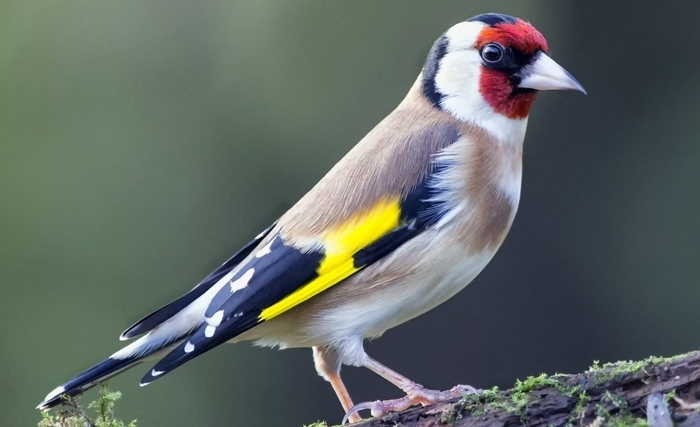

POURQUOI LES OISEAUX SONT IMPORTANTS ?
 types des oiseaux franceLes oiseaux sont des êtres fascinants et inspirants. Entendre un oiseau chanter ou en apercevoir un par la fenêtre procure joie et émerveillement. Chaque jour, les oiseaux sont de ravissants intermédiaires entre nous et la nature. De plus, les oiseaux fournissent des services essentiels dans votre quartier et partout ailleurs au Canada. Entre autres, ils pollinisent des plantes, dispersent des graines et aident à combattre les insectes. Les oiseaux sont d’excellents indicateurs de l’état de l’environnement, des sentinelles de la nature. Leur étude nous permet de connaître l’état général de nos écosystèmes et de l’environnement. La baisse des effectifs de n’importe quelle espèce d’oiseau est une tragédie en soi, mais elle peut aussi révéler des sources de préoccupation de plus grande portée. Il est essentiel de surveiller les populations et de détecter rapidement les déclins pour établir les priorités en matière de conservation. Le suivi et le maintien des populations d’oiseaux et de leurs habitats sont les gages d’un environnement sain pour tous les êtres vivants, y compris nous!